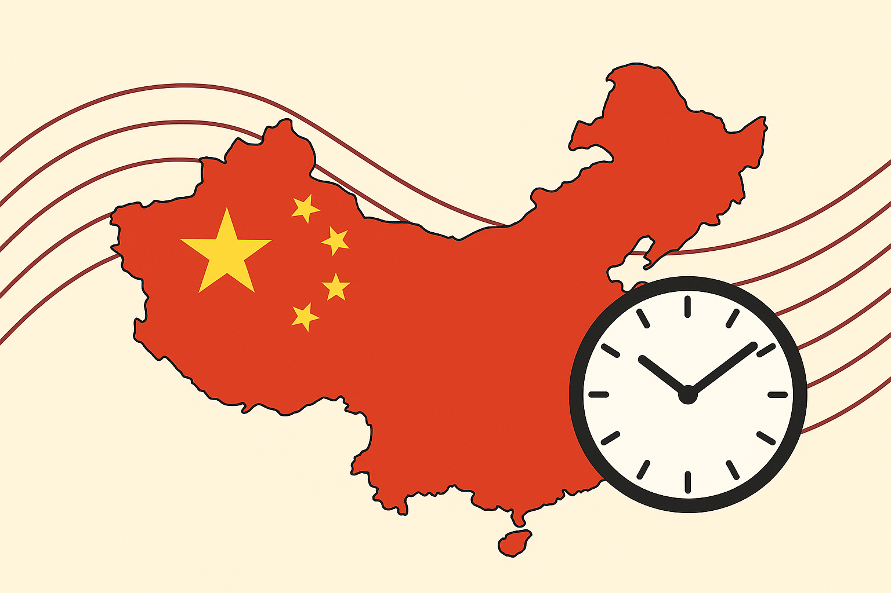

Qual o país com mais fusos horários?
Quando pensamos no país com mais fusos horários, a maioria aposta na Rússia — o maior país do mundo em área. Outros apostam nos Estados Unidos. Mas a resposta surpreende: é a França. Como um país de tamanho médio na Europa pode superar gigantes geográficos? A resposta está na história, nos oceanos e em territórios espalhados pelos quatro cantos do planeta.
Neste artigo
1. O que são fusos horários?
A Terra é uma esfera que gira 360° em aproximadamente 24 horas — o que significa que ela gira 15° por hora. Com base nisso, em 1884 a Conferência Internacional do Meridiano, realizada em Washington, dividiu o globo em 24 fusos horários de 15° cada, todos referenciados a partir do Meridiano de Greenwich, em Londres, que passou a ser o UTC (Tempo Universal Coordenado) — o "zero" do tempo mundial.
Na prática, cada fuso horário representa uma diferença de uma hora em relação ao UTC. Países a leste de Greenwich têm fusos positivos (UTC+1, UTC+2...) e países a oeste têm fusos negativos (UTC-1, UTC-2...). Mas como veremos, nem todos os países seguem essa divisão limpa de hora em hora.
2. Ranking mundial de fusos por país
Veja os países com mais fusos horários no mundo e entenda o que coloca cada um nessa lista:
França
Territórios ultramarinos na América, Oceania, África e Antártida garantem o 1º lugar.
Rússia
O maior país do mundo em área continental possui 11 fusos de forma contínua no território.
Estados Unidos
Inclui territórios como Havaí, Alasca, Guam e Samoa Americana no Pacífico.
Reino Unido
Com territórios ultramarinos como Gibraltar, Bermuda e Ilhas Falkland, chega a 9 fusos.
Austrália
Com estados como South Australia usando UTC+9:30, o país tem 8 zonas de tempo distintas.
Dinamarca
7 fusos horários quando são considerados seu território continental, as Ilhas Faroé e a vasta Groenlândia, que se estende por cinco fusos diferentes.
3. Por que a França lidera?

A França metropolitana — aquela que fica na Europa — ocupa um fuso único (UTC+1 no inverno, UTC+2 no verão). O segredo do seu recorde mundial está nos seus territórios ultramarinos: heranças do período colonial francês que se espalharam pelos oceanos Atlântico, Índico e Pacífico. Cada território em uma localização geográfica diferente representa um fuso horário a mais.
Veja os principais territórios franceses e seus fusos:
4. O curioso caso da China

A China é geograficamente grande o suficiente para abranger 5 fusos horários naturais — de UTC+5 a UTC+9. No entanto, desde 1949, quando Mao Tsé-Tung unificou o país, o governo adotou uma política de fuso único nacional: o Horário Padrão da China (CST, UTC+8), o horário de Pequim.
A decisão foi deliberadamente política: um país, um horário, para reforçar a unidade nacional e simplificar a comunicação entre as províncias. O custo disso, porém, é que as regiões do extremo oeste — como Xinjiang, a quase 5.000 km de Pequim — vivem situações absurdas.
O caso da China é o oposto da França: enquanto a França acumula fusos por ter território espalhado pelo mundo, a China comprime toda a sua extensão geográfica em um único fuso por decisão política.
5. Fusos "quebrados": meias e quartas de hora
Nem todos os países seguem a divisão limpa de hora em hora. Alguns adotam fusos com meias horas ou até quartos de hora de diferença, por razões geográficas, políticas ou históricas. São os chamados fusos fracionários:
6. E o Brasil, quantos fusos tem?
O Brasil é o 5º maior país do mundo em extensão territorial e, por isso, possui 4 fusos horários oficiais:
UTC-2 — Fernando de Noronha
Arquipélago no Atlântico. Apenas o estado de Fernando de Noronha usa este fuso.
UTC-3 — Brasília (horário oficial)
A maior parte do país: Sudeste, Sul, Nordeste, Norte e Centro-Oeste (exceto estados do Mato Grosso e Amazonas).
UTC-4 — Amazonas e Mato Grosso
Estados do Amazonas, Rondônia, Roraima, Mato Grosso e Mato Grosso do Sul.
UTC-5 — Acre e parte do Amazonas
Estado do Acre e a parte mais ocidental do Amazonas, próxima ao Peru e Colômbia.
7. Perguntas frequentes ❓
🚀 Curiosidade Extra
Em 2011, Samoa pulou literalmente um dia inteiro — o dia 30 de dezembro de 2011 nunca existiu no país. O governo decidiu mover Samoa para o lado oeste da Linha Internacional de Data para se alinhar com seus parceiros comerciais Austrália e Nova Zelândia. Um salmão que estava sendo pescado no dia 29 em Samoa já era do dia 31 quando chegou ao mercado neozelandês — no mesmo dia em que saiu das águas samoanas.
Conclusão
Os fusos horários são muito mais do que uma divisão técnica do tempo — são reflexos de história, política, geografia e cultura. A França lidera o ranking graças ao legado colonial que espalhou seu território pelos oceanos. A China comprove cinco fusos em um só por decisão política. O Nepal adota um fuso único no planeta por questão de identidade. E o Brasil, com suas dimensões continentais, equilibra quatro fusos para conectar um país de proporções gigantescas. Cada vez que você ajusta o relógio ao viajar, está tocando numa herança de 4.000 anos de civilização humana tentando organizar o tempo.
Fontes e referências
- Bartky, Ian R. Selling the True Time: Nineteenth-Century Timekeeping in America. Stanford University Press, 2000.
- Zerubavel, Eviatar. The Seven Day Circle: The History and Meaning of the Week. University of Chicago Press, 1989.
- TimeAndDate.com — Interactive Time Zone Map
- Encyclopaedia Britannica — "Time Zone"
- BBC Future — The day Samoa lost (sobre o pulo de dia em Samoa)
- IBGE — Fusos Horários do Brasil